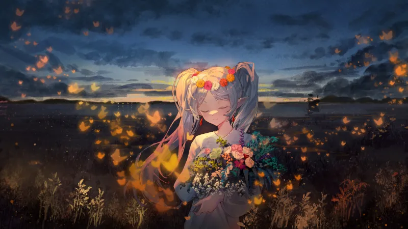
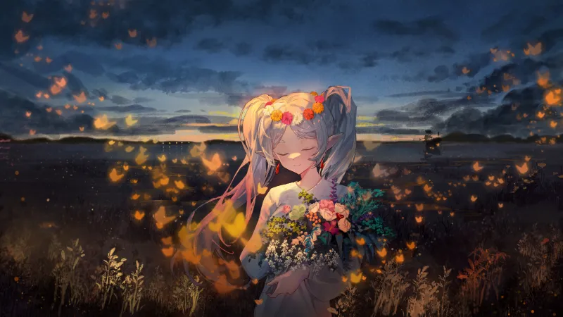

GIỚI THIỆU ĐỒ HỌA


Frieren là một nữ pháp sư tộc Elf đã sống hàng trăm năm, sở hữu sức mạnh
phép thuật vượt xa con người nhưng lại thiếu trải nghiệm về cảm xúc và giá
trị của thời gian. Sau khi cùng nhóm anh hùng tiêu diệt Ma vương, Frieren
trở lại cuộc sống lang thang bất tận như trước. Nhưng khi người đồng đội
thân thiết — đặc biệt là anh hùng Himmel — qua đời vì tuổi già, Frieren
mới thực sự nhận ra rằng thời gian đối với con người rất ngắn ngủi, và
việc cô sống quá lâu khiến cô không hiểu được những khoảnh khắc trân quý
mà họ từng chia sẻ. Sự hối tiếc muộn màng ấy đã mở ra một hành trình mới:
không phải để đánh bại quái vật, mà để hiểu về con người, về các mối quan
hệ, và về chính bản thân mình.
Trên hành trình ấy, Frieren dần thay đổi: cô học cách quan tâm, học cách
tạo dựng ký ức với những người đồng hành như Fern và Stark; học cách sống
chậm lại và cảm nhận cảm xúc mà trước đây cô luôn xem nhẹ. Câu chuyện
không tập trung vào chiến đấu hào nhoáng, mà nhấn mạnh vào sự bình dị, vào
cảm giác tiếc nuối, sự trân trọng ký ức, và hành trình chữa lành của một
người bất tử muốn hiểu ý nghĩa của đời người. Thế giới trong Frieren không
ồn ào, mà nhẹ nhàng, sâu sắc, nhưng mỗi khoảnh khắc đều mang một thông
điệp về thời gian, sự kết nối và giá trị của những kỷ niệm nhỏ bé. Đó
chính là điều khiến Frieren trở thành một trong những tác phẩm fantasy cảm
xúc và tinh tế nhất hiện nay.


 
